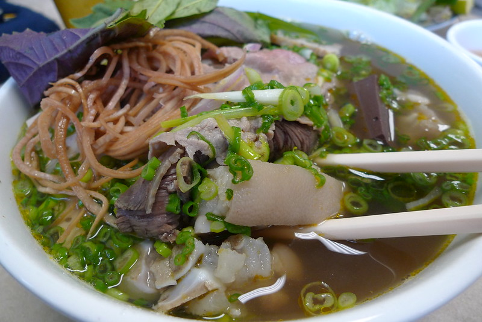

Bun bo Hue

Ancient Hue, the former capital city of Vietnam, located in Central Vietnam, boasts a rich and diverse culture and cuisine that is enviable to the current capital city Hanoi. Bun bo Hue, translated as beef noodles from the Hue region, is the signature dish that has grown in popularity not only in Vietnam but also around the world.
Ingredients
For the broth
- 1kg beef/pork bones
- 600g beef shank
- 1kg pork trotters (pig's front feet)
- Vietnamese fermented shrimp paste (Mam ruoc)
- 6 stalks bruised lemongrass and ginger, minced garlic, chopped chili
- sugar, salt, MSG, etc.
For the saté
- 100g chili flake
- 1 garlic bulb
- 1 pineapple
- 5 stalks of bruised lemongrass
- 5 tbsp cooking oil + 1 tbsp sugar + 1 tbsp salt
Others
- 1kg Hue rice vermicelli noodle
- Vietnamese shrimp patties (Cha Hue)
- boiled blood cubes (Huyet), optional
Garnishes
- spring onions, chopped
- cilantro, chopped
- onion, thinly sliced
- fresh greens (shredded banana blossom or shredded lettuce/cabbage, bean sprouts
Instructions
Step 1
- Rinse the beef/pork bones and pork trotter with saltwater and white vinegar to remove the smell. Boil over high heat in 5-10 minutes until the impurities rise to the top. Pour the boiled water away and rinse the beef and bones again.
- Put the bones and pork trotters to the pot and fill with 5 liters of water. Also add pork trotter, and 3 stalks lemongrass, and ginger. Stew the broth for 2 hours.
Step 2
- After rinse beef shank and pork trotters, thoroughly, marinate beef shank with: 2 tbsp sugar + 1 tbsp salt + ½ tbsp MSG + 1 tbsp diluted Vietnamese fermented shrimp paste + 2 tbsp chopped purple onion + 2 tbsp minced garlic + 2 tbsp chopped lemongrass.
- Stew beef shank similarly to the bones. When the pigskin of the trotter turns clear and the beef shank is cooked well, take out and soak in a tub of cold water. Then drain, and slice thinly into bite-sized pieces.
Step 3
- Put two kinds of broth into the same large pot, boil and season with the following proportions: 3 tbsp fish sauce + 2 tbsp salt + 2 tbsp sugar + 2 tbsp of MSG + 1/2 cup of diluted fermented shrimp paste.
- Add Vietnamese shrimp patties (Cha Hue) and boiled blood cubes (Huyet) into the pot. Wait until the broth boiling.
Step 4
- Heat 5 tbsp cooking oil in the pan. Add the minced garlic and lemongrass to non-aromatic, stir well. Add mince the pineapple and continue to stir. Boil for 5 minutes, then add 1 tbsp sugar, 1 tbsp salt, continue to stir. Add chili flake and chopped chili and stir for 15 minutes until smooth.
- Add half of this saté to the stockpot. Save the rest in a small bowl for serving later.
Step 5
- To server, place a handful of the rice vermicelli in a serving bowl. Top with the sliced beef and pork trotter. Also add boiled blood cubes (Huyet), Vietnamese shrimp patties (Cha Hue)
- Ladle te broth over the noodles and garnish with the chopped spring onion, cilantro, bean sprouts, and paper-thin sliced onion. Serve with extra saté and fresh vegetable platter.
Return to main page